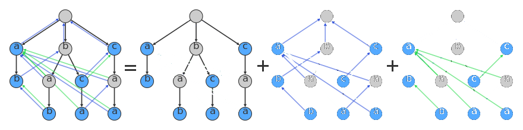

Copyright ©2018. All rights reserved. Created by CoDev
Η δομή Aho-Corasick μας βοηθάει να βρούμε όλες τις εμφανίσεις όλων των λέξεων ενός λεξικού μέσα σε ένα μεγάλο κείμενο. Πριν την μάθουμε πρέπει οπωσδήποτε να έχουμε καταλάβει καλά τον αλγόριθμο για String Matching KMP, όπως και τα Tries.
Η πολυπλοκότητα είναι η βέλτιστη. Χρειαζόμαστε γραμμικό (στο πλήθος των γραμμάτων του λεξικού) χρόνο κατασκευής, και για κάθε κείμενο που ελέγχουμε κατόπιν, χρειαζόμαστε γραμμικό (στο πλήθος των γραμμάτων του κειμένου) χρόνο, συν το χρόνο για να τυπώσουμε τις εμφανίσεις (output sensitive).
Οπτικά έχουμε δύο ή τρία δέντρα, το ένα πάνω στο άλλο. Το πρώτο είναι ένα Trie (μαύρες ακμές προς τα μπροστά) των λέξεων του λεξικού. Το δεύτερο δέντρο (μπλε ακμές προς τα πίσω) μας επιτρέπει να διορθώνουμε τα λάθη μας όταν δεν έχουμε ταίριασμα, ακριβώς όπως συμβαίνει και στον KMP. Ανάλογα με την εφαρμογή μπορεί να έχουμε ένα τρίτο δάσος (συντόμευση του δεύτερου δέντρου, με πράσινες γραμμές προς τα πίσω), που κάνει ακριβώς την ίδια δουλειά με το δεύτερο, αλλά δείχνει πάντα σε ολόκληρες λέξεις, όχι σε προθέματά τους: 
Διαβάζουμε θεωρία από τις διαφάνειες του Stanford (θυμόμαστε αυτό).